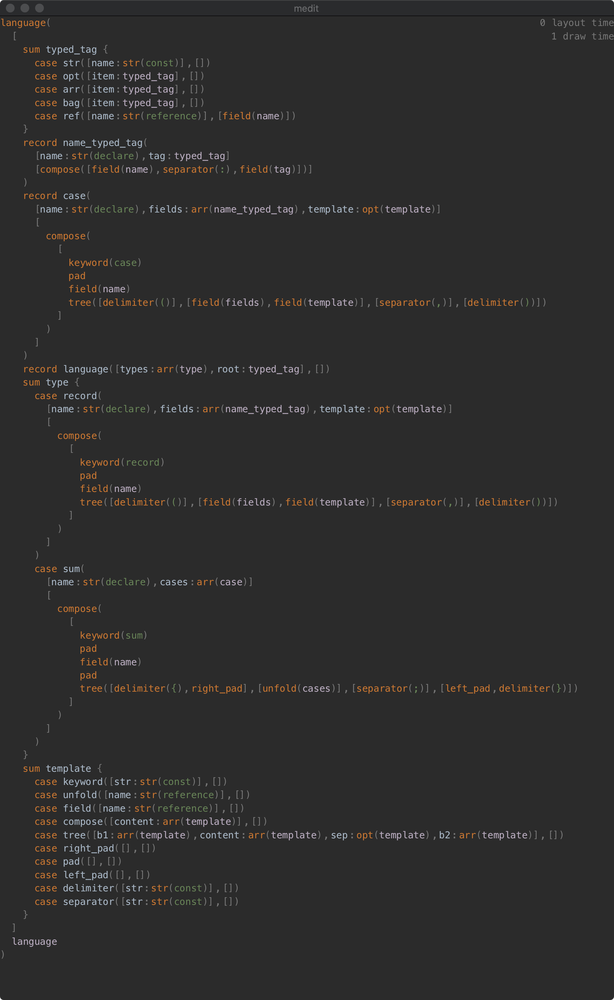

We have a tree editor now, but the visualization as a tree is not user-friendly, we need to layout the information in the tree in a compat way.
The algorithm to do this is called a pretty printer. It is just traditionally pretty-printers print to a plain text file, but our pretty printer will try to layout GUI widgets.
The reverse of a parser combinator is a layout combinator. We have these basic combinator:
sealed trait Template
object Template {
case class Str(content: String) extends Template
case class Field(name: String) extends Template
case class Tree(
start: Seq[Template],
content: Seq[Template],
separator: Option[Template],
end: Seq[Template]
) extends Template
case class Compose(content: Seq[Template]) extends Template
}
The way Compose works is like in Wadler's "A Prettier Printer", a inline fragment composed with a multiline fragment, will have the inline fragment prepended to the first line of the multiline fragment. This will allow we to represent syntax like
some stuff {
child1
child2
}
as Compose(some stuff, Tree({, [c1, c2], })).
Then each Record and Case will have a Template, and when layout the AST, we will layout according to the template.
The only line breaking is created by a Template.Tree that doesn't fit in one line. The detailed algorithm is a lot like this post. But we are not doing it streamed, but generate Frags which is a layout with line breaking point determined, then each line will be measured so that baseline is aligned etc. Template.Compose will generate to different construct depending on if this frag contains line breaks. This is represented by BlockFrag and LineFrag.
sealed trait Frag
sealed trait BlockFrag extends Frag
sealed trait LineFrag extends Frag
object BlockFrag {
class Compose(content: Seq[Frag]) extends BlockFrag
class Tree(...) extends BlockFrag
}
object LineFrag {
class Compose(content: Seq[LineFrag]) extends BlockFrag
class Text(content: String) extends BlockFrag
}
Here BlockFrag.Compose will have the invariant that one of it's content must be a BlockFrag. Recursively this means one of it's descendent will be a BlockFrag.
Each AST node can have it's Frag, and we have created a representation of the layout result in a compositional way. This makes caching possible, so we don't re-line-break or re-measure when possible.
The thing looks like this:
